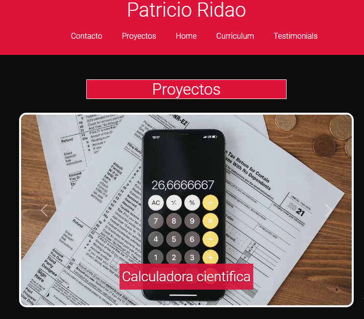

Calculadora cientifica

Esta es una calculadora cientifica desarrollada en python. La calculadora científica cuenta con todas las funciones matemáticas básicas, como sumar, restar, multiplicar y dividir, así como con funciones avanzadas para cálculos más complejos. Además, cuenta con la capacidad de trabajar con números complejos y de realizar cálculos en notación científica.Una de las características más importantes de esta calculadora es su facilidad de uso. Su interfaz intuitiva hace que sea fácil para cualquier persona, incluso sin experiencia en matemáticas avanzadas, utilizar todas las funciones de la calculadora. Otra característica importante es que esta calculadora científica es completamente personalizable. Los usuarios pueden agregar sus propias funciones y personalizar la interfaz a sus propias necesidades
Proyecto Oraculo
Este programa, llamado "Proyecto Oráculo", utiliza datos históricos y actuales para analizar patrones y tendencias y, mediante la inteligencia artificial, hacer predicciones precisas sobre lo que sucederá en el futuro.Las empresas pueden utilizarlo para ajustar su estrategia de mercado y predecir las tendencias futuras. Incluso las personas comunes pueden utilizarlo para tomar decisiones informadas sobre sus inversiones y planes futuros.
A pesar de que aun tiene mucho que mejorar, es un proyecto completamente funcional y en constante crecimiento. Con mejoras y actualizaciones constantes la idea es que sea un proyecto perfecto.
Proyecto Javascript
Estoy encantado de compartir mi nuevo proyecto hecho en JavaScript, una herramienta que estoy seguro será muy útil para muchas personas. Este proyecto es un ejemplo más de cómo JavaScript puede ser utilizado de manera creativa para resolver problemas reales en el mundo digital. La idea detrás de este proyecto es ofrecer una solución innovadora y eficiente para un problema específico en línea. Utilizando la poderosa capacidad de JavaScript para procesar y manipular datos en tiempo real, he desarrollado una herramienta que estoy seguro que impresionará a todos los que la usen.
Portafolio personal
Este proyecto es mi portafolio digital personal diseñado para presentar mis habilidades y experiencia como desarrollador web full-stack, utilizando mi conocimiento en HTML, CSS, Sass, Bootstrap, JavaScript y Node.js. A través de mi página de portafolio, muestro ejemplos de mis proyectos anteriores y ofrezco planes de precios flexibles para adaptarme a las necesidades de cada cliente. Estoy comprometido con el éxito de mis clientes y proporciono soluciones tecnológicas personalizadas para ayudarles a alcanzar sus objetivos comerciales en línea.